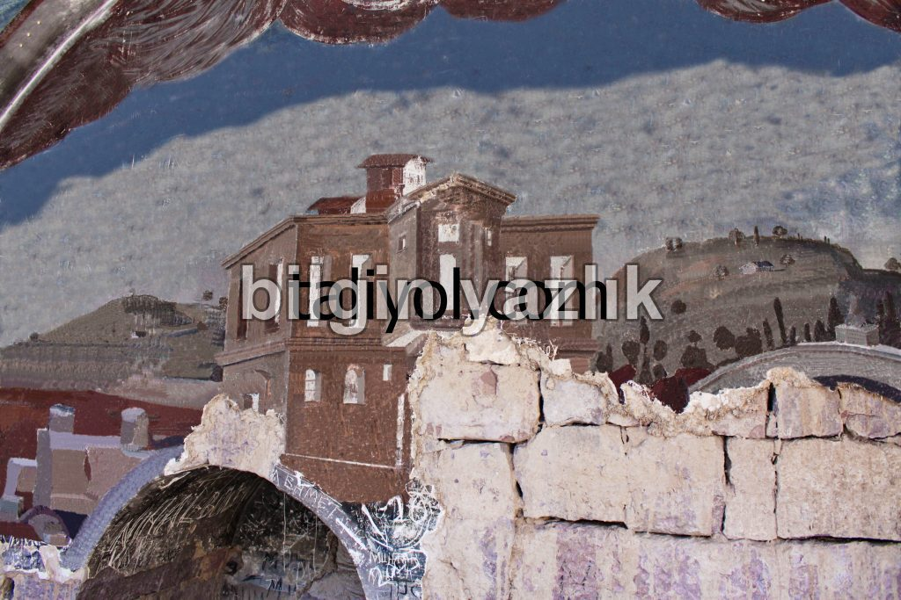
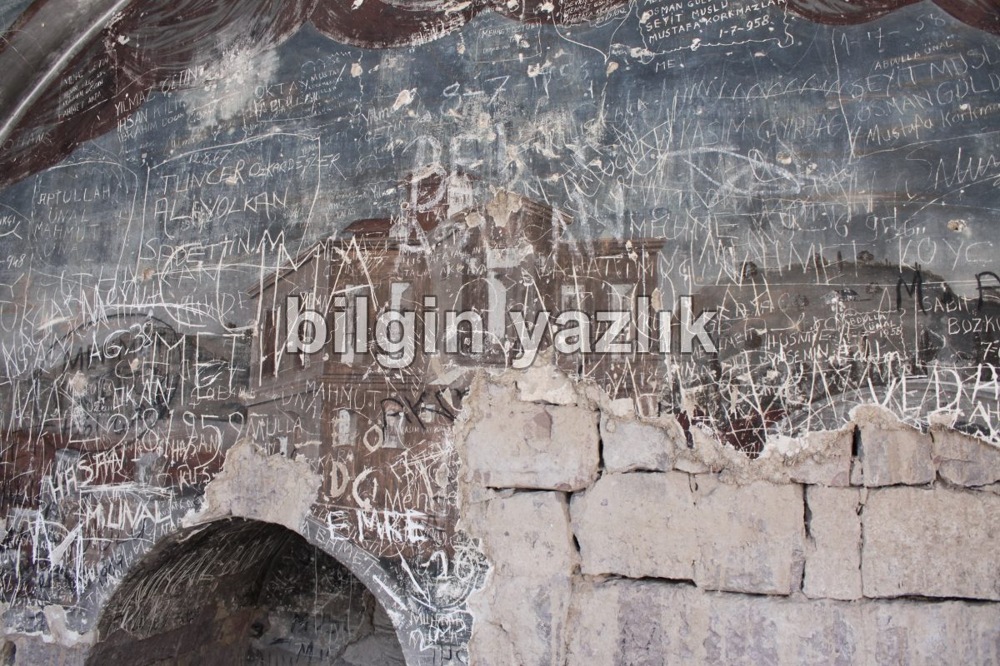
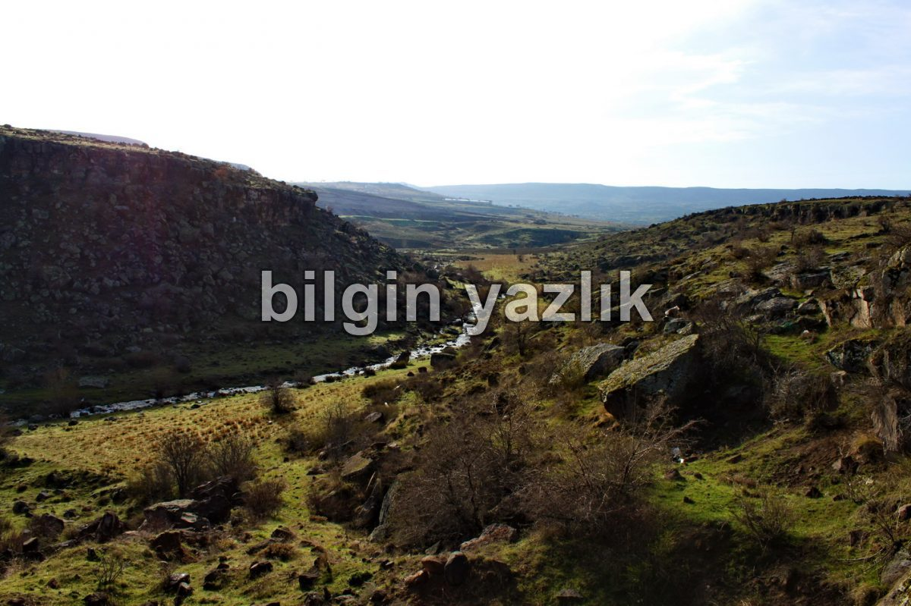
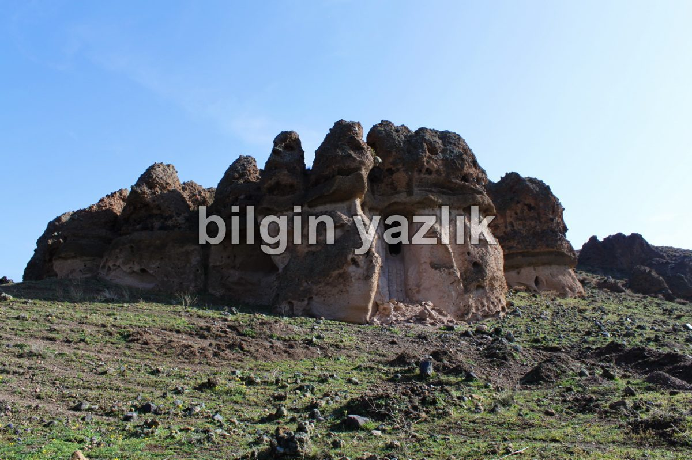
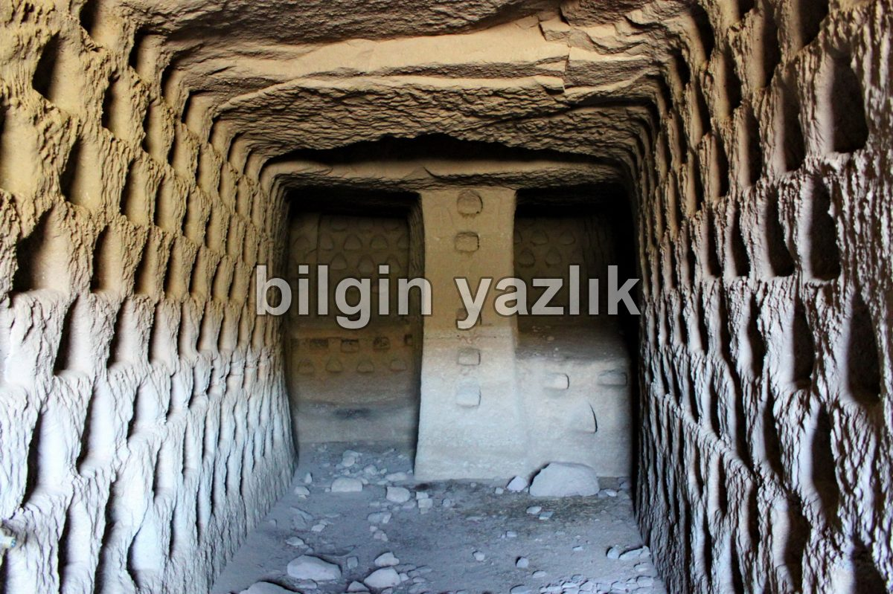
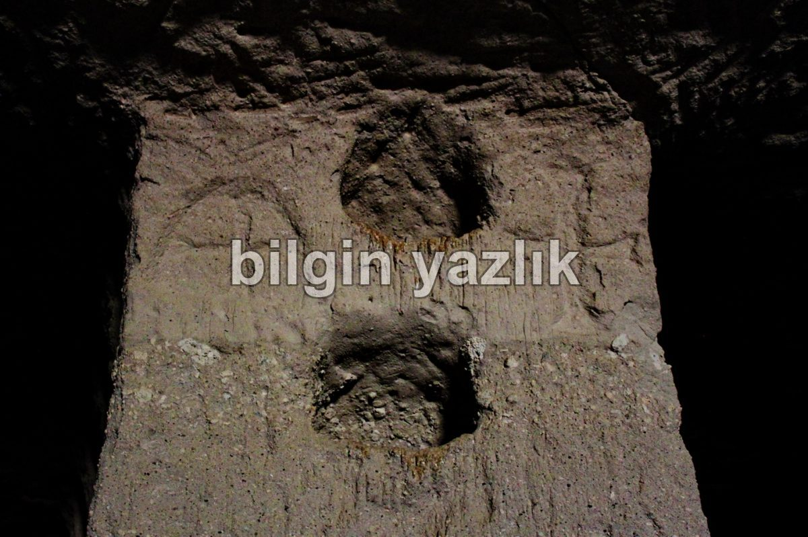
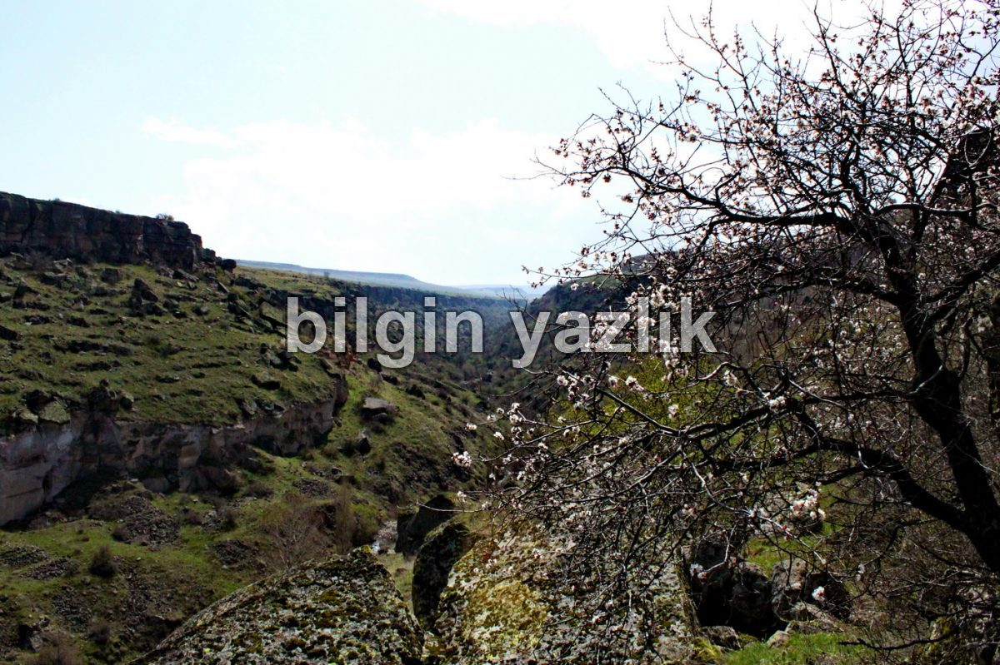
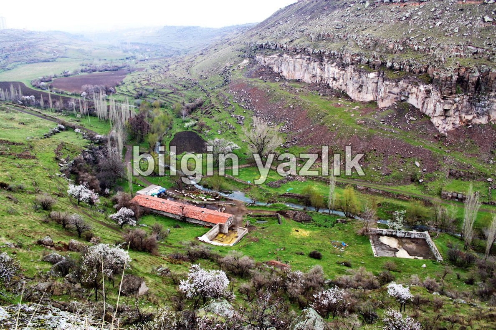
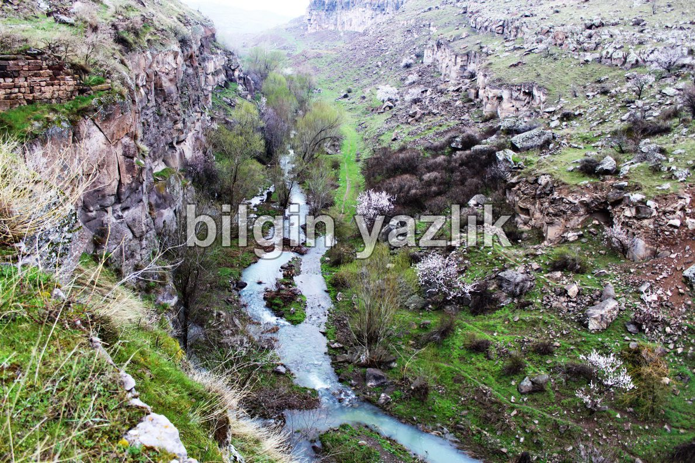

DEREVENK VADİSİ
Kayseri ilinin Talas ilçesinin doğusunda -doğu batı istikametinde- yer alan vadinin ortasında kış ve bahar aylarında ciddi miktarda su taşıyan bir dere akmaktadır. “Venk” kelimesinin ise Ermenice “kilise” anlamına geldiğini internetten okudum, fakat gerçekliği tartışılır, bu konuda bilgisi olan arkadaşlardan bilgi talep ediyorum. Dolayısı ise “Derevenk” kelimesinin tam anlamı “Dere Kilise” oluyor. Vadinin Zincidere kolunun ortalarına doğru, saklı bir mağara yer alıyor, bu mağarada hristiyanlık izleri buldum. İzlerin sadece taş oyması olduğuna bakacak olursak, buranın bir antik şapel olduğunu iddia etmek yanlış olmaz.
Vadide bol miktarda söğüt, kuşburnu, meşe türünde ağaçlar var. Vadiden akan suyun debisi özellikle bahar aylarında çok yüksek oluyor. Ağustos ayında ise neredeyse hiç su akmaz oluyor. Bu durum vadi içerisinde akan suyun toplama su taşıdığını gösterir.
Aslında Derevenk Vadisi, Germir’den başlıyor, Tavlusun’la devam ediyor ve Anayurt arkasında genişliyor, daha sonra tekrar daralarak Doğuya doğru ilerliyor, bu istikamette giderken Zincidere ve Reşadiye’ye doğru iki kola (Çataldere) ayrılıyor. Zincidere kolunda antik medeniyetlere dair izler buldum fakat Reşadiye kolunda bu tarz yapılar göremedim. Reşadiye kolu daha ziyade, tarım için kullanılmış gibi duruyor. Çok sık ağaçlarla kaplı ve sekilere ayrılmış bir yapısı var. Bu kolda, armut, elma, kayısı, çınar, meşe, söğüt, çam, ceviz ağaçları yer alıyor ve yine ortasından bir dere akıyor.
Vadinin her iki yakasında çok sayıda irili ufaklı oyma mağara yer alıyor. Özellikle vadinin Talas girişinde yer alan yapılar incelendiğinde, kuzeye baktıkları, mufak, şırahane, konut amaçlarıyla kullanıldıkları görülebilir. Bu yapılardan bir tanesinin girişinde yörede görmeye alışkın olmadığım bir duvar resmi gördüm. Genelde yörede yer alan duvar süslemeleri (fresko) hristiyanlık inancıyla alakalı canlandırmalar şeklinde olurdu. Fakat bu yapıda bir köşk ve çevresindeki tabiatın resmedildiğini gördüm. Resim çok hasar görmüş durumda, elimden geldiğince photoshopta düzeltmeye çalıştım. Aşağıda resmin orjinalini ve düzenlenmiş halini görebilirsiniz. Giriş kapısının üstünde bu resim yer alan yapının ne maksatla kullanıldığını bilmiyorum, tahminleriniz varsa memnuniyetle dinlerim.
Vadinin girişi hariç geriye kalan bölümlerinde kuzeye bakan yapılar göremedim. Yapılar çoğunlukla güneye bakacak şekilde inşa edilmişler. Yine vadinin Talas girişinde özel bir çiftlik yer almaktadır. Bu çiftlik içerisinde kiliseye benzettiğim bir yapı gördüm fakat çiftliğe bırakın girmeyi, yaklaşmak bile imkansız.
Vadinin uzunluğu tahmini olarak 15 km civarında. Germirden başlayan vadi Tavlusun ardından Talas oradan Reşadiye oradan da Zincidereye kadar devam ediyor. Vadi Reşadiye civarında iki kola ayrılıyor. Güney kol, Reşadiye içerisinden geçerken, Kuzey kol Zincidereye kadar devam ediyor.
Derevenk Vadisine Google Haritalarından Bakın.











Bu yazı taliyol arşivinden taşınmıştır. · özgün kayıt